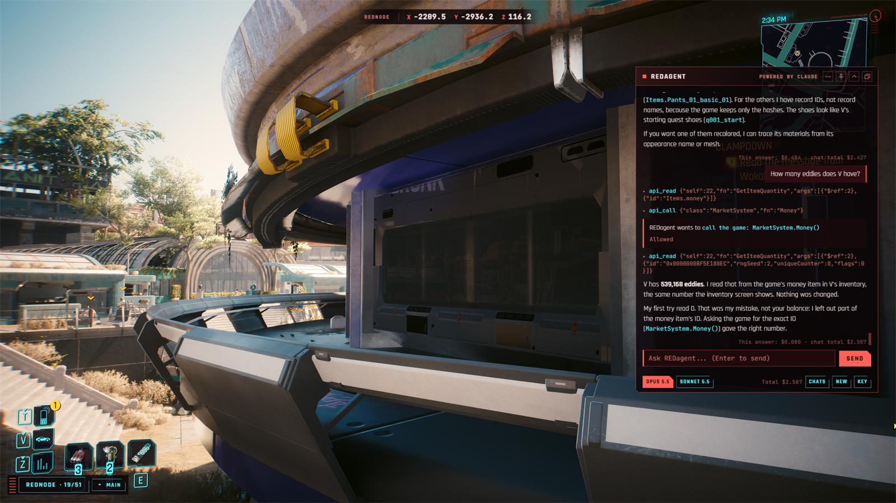
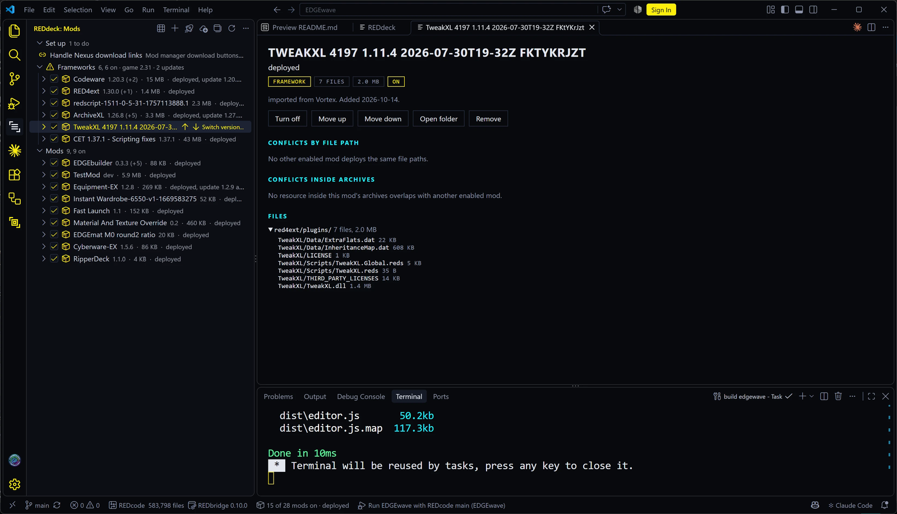
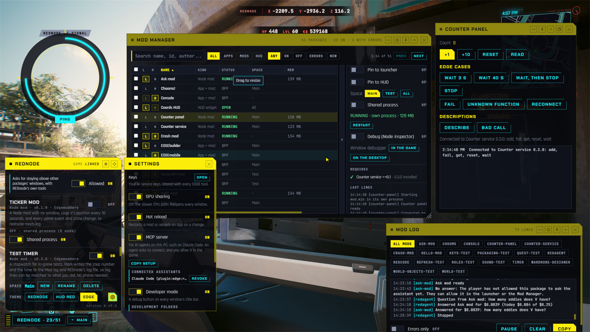
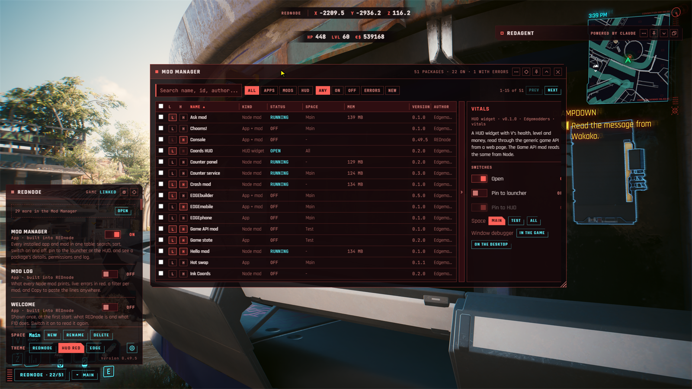

Next-generation modding.
We are building EDGE, a next-generation modding platform where you and an AI assistant work on the same mod, with the same tools, from the first idea to a running game. Making, testing, installing and running a mod all happen in one open platform, instead of a dozen separate tools and manual steps.
01What EDGE gives you
EDGE is early and moving fast. Each benefit below is labelled honestly with where it stands today.
| Benefit | What it means for you | Status |
|---|---|---|
| AI assistants, in the game and at your deskREDagent · EDGEchat · REDnode · REDcode · EDGEdeck · EDGEmat | REDagent, powered by Claude, writes, runs and fixes mods with you in a chat inside the game. At your desk, the EDGEchat plugin connects Claude Code to the running game, the game’s files, your mods and their materials in one install. Seven toolkits offer their tools to AI assistants through MCP, the standard way an assistant uses a program: REDnode, REDcode, EDGEdeck, EDGEmat, EDGEquest, EDGEhack and EDGEwave. Installed REDnode mods can offer tools of their own too. | Working |
| You approve every changeREDagent · EDGEchat · EDGEdeck | REDagent shows each file change first and waits for Allow. Every change it makes, and every deploy EDGEdeck makes, has an Undo. With Claude Code, the EDGE tools ask before anything changes the running game, your save or the game folder. | Working |
| See changes in the running gameREDnode | Change a mod and see it in the running game without a restart. Swap a changed archive, such as a new texture, into the running game. Find faults in a mod while the game runs, with breakpoints and a console in the game. Untested: attaching VS Code as the debugger, and swapping archives that change sound on game 2.5. | Working |
| Mod isolation and crash protectionREDnode | Mods and overlay apps run in their own processes, outside the game. If one crashes, your game keeps running. Planned: mod code that runs inside the game itself, sandboxed and time-limited. | Working |
| Safe, undoable deploymentEDGEdeck | EDGEdeck keeps a record of every file it puts in the game folder. One click undoes a deploy and removes exactly those files. Conflicts are shown even inside mod archives, with who wins and why. | Working |
| One install for the editor toolsEDGEkit | The EDGEkit app (a preview for Windows) comes with REDcode, EDGEdeck, EDGEmat, EDGEwave, EDGEquest, EDGEhack and REDsave built in, keeps them updated, and installs Claude Code at its first start. Already use VS Code? One extension pack installs the tools there. The tools that run in the game (REDnode, REDagent, EDGEbuilder) install separately. | Working |
| Build where you see itEDGEbuilder | Place the game’s own objects and people in the running game by dragging their handles, with a free camera, instead of typing coordinates into a file. Arrange several objects with groups, copy and paste and undo. Bake a scene into a real mod that works with EDGEbuilder uninstalled. People are not baked yet. | Working |
| Sound and material studiosEDGEwave · EDGEmat | Edit the game’s sounds and recolor its clothes for your mod, with plain controls or by asking an assistant. Both are released previews. EDGEwave: replaced, silenced and new sounds were heard in the game; voiced quest lines are not there yet. EDGEmat: recolors, and new materials made from your words, were seen in the game. | Working |
| Quickhacks in plain wordsEDGEhack | Read every tier of any quickhack from your own game: its cost, upload time, damage and effects. Change them, or make a new quickhack with effects and icons of your own, and try it in the running game. A released preview. Quickhacks for devices and vehicles can be read but not changed yet. | Working |
| Quests in plain wordsEDGEquest | Read any of the game’s quests as steps and lines, and write your own as a short story with places, choices and music. EDGEquest makes the quest files. A released preview: small quests with choices and branches were played in the game. For now a quest has V alone, with subtitles only, and starts when a save loads. Phone calls, other people in a scene and voiced lines are coming. | In progress |
| HTML overlay apps with a UI kitREDnode | Build in-game windows and HUD widgets with HTML, CSS and JavaScript, styled with a ready-made UI kit. Use any web framework, browser dev tools and npm packages instead of Lua and ImGui. | Working |
| Native game UI, inspected and built liveREDnode · UI Tools | Read the game’s own HUD and menus as a live tree, try changes on them, and write HUD panels the game draws itself in HTML-style markup, run and exported from an editor in the game. Planned: clicks on those panels, and screens of your own. | In progress |
| Game API built for agentsREDnode · REDagent | A typed API that can call any game function, generated from the game’s own type system, with a published reference. REDagent looks functions up and calls the running game, asking you first before anything that could change it. | Working |
| Full VS Code and extension ecosystemREDcode · EDGEdeck · EDGEkit | The editor tools are VS Code extensions, so you keep its editor, Git, themes, AI assistants and thousands of extensions, including the existing redscript tooling. | Working |
| WolvenKit compatibleREDcode · REDbridge | Opens and packs WolvenKit projects. Game files open as readable JSON and save back, using WolvenKit’s own code. Move between tools freely. | Working |
| Fast, with nothing in betweenREDnode · REDbridge | REDnode is a plugin inside the game and draws with the game’s own graphics device, so its windows cost very little. REDbridge runs WolvenKit’s compiled code directly. Planned: simple rules that run inside the game itself, with no round trip. | In progress |
| Open source, community firstAll toolkits | MIT where we can, GPL-3.0 where WolvenKit requires it. EDGE works alongside RED4ext, Cyber Engine Tweaks, redscript, ArchiveXL and TweakXL. | Working |
02The toolkits
EDGE is a family of open-source toolkits. Five of them cover the whole life of a mod; more toolkits build on them for particular jobs. They build on each other: each section below says what its toolkit needs. New here? Your first hour says which to install first.
Ask
REDagent
your modding agentCreate
REDcode
edit with your agentBuild
REDbridge
convert, packDeploy
EDGEdeck
install, undoRun
REDnode
live in game03Ask REDagent

An assistant inside Cyberpunk 2077 that writes, runs, checks and fixes REDnode mods with you, while you play. You talk to it in a chat window drawn over the game.
- Ask for a mod in plain words; REDagent writes it and REDnode loads it at once
- Reads mod logs, overlay windows and the running game to check its work
- Every file change is shown to you first: Allow, Allow all, or Deny
- Undo for every change, with backups kept on your PC
- Opus for building mods, Sonnet for quick questions; each answer shows its cost
- Uses the tools other REDnode mods offer, asking you first unless a tool only reads
- 0.4.1 released for game 2.5, on Nexus Mods and GitHub. Needs REDnode, and your own Anthropic API key, which you paste once, in the game

04Ask at your desk with EDGEchat
The EDGE plugin (an add-on) for Claude Code, Anthropic’s AI assistant. Claude Code is a chat panel in VS Code or EDGEkit that can read files and do work for you. EDGEchat gives it the modding knowledge, and connects it to the running game, the game’s files and your mods.
- One install connects Claude Code to four EDGE tools: the running game (REDnode), the game’s files (REDcode, through REDbridge), your mods (EDGEdeck) and materials (EDGEmat)
- Commands for the common jobs:
/edge:new-mod,/edge:check-mod,/edge:init-projectand/edge:setup - Modding knowledge that Claude loads by itself when a task needs it
- The EDGE tools ask you before every action that changes the running game, your save or the game folder, whichever permission setting Claude Code is in
- Not connected yet: quests, quickhacks and sounds. EDGEquest, EDGEhack and EDGEwave each connect to Claude Code by themselves
- 0.1.1 released for game 2.5, for Windows. EDGEchat is free; Claude Code needs a Claude plan that includes it
05Create with REDcode

An editor for the game’s files, built on VS Code, Microsoft’s free code editor. It brings WolvenKit’s ways of working into the editor, where your AI assistant already works.
- Browse the game's archives folder by folder
- Open any game file as readable JSON, edit it, save it back
- Texture and 3D mesh viewers, a sound player and a TweakDB browser
- TweakXL language support: start a tweak from any TweakDB record
- Opens and packs WolvenKit projects, installs them through EDGEdeck, and swaps them into the running game through REDnode (Pack and Play)
- Find Items: pick a 3D model and see which in-game items use it
- Your agent sees the same project you do, through
redcode-mcp - 0.10.9, a preview, on the VS Code Marketplace and Open VSX, and built into EDGEkit. Needs REDbridge, which it fetches for you
06Deploy with EDGEdeck

A mod manager that lives inside VS Code and EDGEkit. One list of mods and four things to learn: add, turn on or off, deploy, remove.
- Add mods from zip, 7z, rar, folders or Nexus links
- Recognises RED4ext, CET, redscript, ArchiveXL, TweakXL and REDmod
- Keeps a record of every file it puts in the game folder, so Undo removes exactly those and nothing else
- On the same drive as the game, mods are linked, not copied, so they take no extra disk space
- Shows conflicts inside mod archives, with a "let this one win" button
- Loadouts, sections, Vortex import, a command line and an MCP server for agents
- Gets the frameworks most mods need, and updates every mod, in one click. Can deploy or remove a single mod on its own
- 0.31.0, a preview, on the VS Code Marketplace, Open VSX and Nexus Mods, and built into EDGEkit. You sign in to Nexus by pasting a key from your Nexus account once

07Build with REDbridge

The engine room. REDbridge runs WolvenKit's proven C# libraries as a local service, so EDGE never has to reinvent the game's file formats.
- Indexes a game install and searches its archives in seconds
- Converts game files to readable JSON and back
- Decodes textures, resolves hashes, reads mod archives and TweakDB without the game running
- Packs, exports and imports with WolvenKit's own tools
- One API for the editor, EDGEdeck, REDnode and AI agents (through
redcode-mcp) - 0.12.1 released for game 2.5, built with WolvenKit’s first release for it. EDGEdeck, REDcode and REDnode download it for you: you never install or open it yourself
08Run with REDnode

The runtime that puts mods in the game, and the one REDagent writes for. Script Cyberpunk 2077 in TypeScript and JavaScript with npm, and draw HTML apps on top of the game.
- Node mods with hot reload, beside HTML overlay apps and HUD widgets
- A UI kit in the HUD style, plus the game's own UI sounds
- Overlay host runs outside the game, so a crash can't take it down
- A typed game API that calls any game function, with a published reference
- Read and change TweakDB, with changes undone when the mod stops
- An in-game Mod Manager, and spaces: named sets of windows, like virtual desktops
- An MCP server that lets AI agents read logs, see windows and call the game
- Mod services: mods call each other, and offer their own tools to AI agents
- Swap changed archives into the running game (archives that change sound are untested on game 2.5)
- Live debugging: breakpoints in Node mods, DevTools for overlay windows
- A built-in Console: type commands such as
addItem, or JavaScript, in the game - Native HUD panels the game draws itself, written as HTML-style ink markup
- The optional UI Tools pack: its UI Workbench inspects the game’s own UI, tries changes live, copies it into markup, and runs and exports your own panels
- 0.62.4 released for game 2.5, on Nexus Mods and GitHub, as a zip you install like any mod. Optional UI Tools, Sound Tools and Admin Tools packs


09More toolkits
Specialist toolkits build on the five above, each for one job. Some are early: their status is shown with each.
10Build in the world with EDGEbuilder

A world builder that runs inside the game. Find the game’s own objects and people, drop them where you look, and place them precisely, in the running game with its own lighting.
- Search an index of the game's meshes and entities, built from your own game files, and those in your mods and open REDcode project
- Select several objects, group, duplicate, copy and paste, and undo
- Drop where you look, then move, turn and scale by dragging handles on the object, with keys, or with typed numbers
- A free editor camera that leaves V where they stand and hides the HUD
- Bake a scene into a real mod, through REDbridge, that stands with EDGEbuilder uninstalled
- 0.10.9, a public preview for game 2.5, on Nexus Mods and GitHub. Placing objects and people, arranging, saving scenes and baking them into a mod all passed in the game. People are placed but not baked yet
- Needs REDnode 0.58.0 or later. To bake, also REDbridge 0.12.1 and ArchiveXL
- Next: importing your own 3D model (built, being tested in the game)
11Shape sound with EDGEwave

A sound studio for Cyberpunk 2077 modding that works beside REDcode. Open a game sound from REDcode in one click and edit it for your mod.
- Trim, cut, paste, fades, gain, normalize and loop points as plain buttons
- Edits you can undo, saved in a small file that holds no game audio
- Mix tracks on one timeline with effects such as Radio and Holocall, then render a WAV into your project
- Into the game: replace one game sound, replace or silence everything a sound event plays, or add a new named sound. All were heard in the game
- Voice tools through ElevenLabs, with your own key: make a sound from a description, speak a line, re-voice a line
- An MCP server, so Claude can search sound events, make a new one and voice lines
- 0.2.0, a preview, on the VS Code Marketplace, Open VSX and Nexus Mods, and built into EDGEkit. Needs REDcode. Voiced quest lines are not in the game yet
12Recolor with EDGEmat

A material editor for the game's multilayered materials, the layers that color most clothing. Pick an item, click a layer, choose a color and see it on the model, or ask an agent to “make this jacket red”.
- Each layer in plain words, such as “leather, black, 6% of the jacket”, with the raw values one click away
- Color swatches from each surface's own presets, with the nearest match to a color you ask for
- Builds its list of the game’s materials from your own copy of the game. No game files come with EDGEmat
- A Desk: a scratch area for the garments you are working on, with your edits and versions, until they go into a mod project
- Every feature also works through an AI assistant: REDagent in the game, Claude Code at your desk
- Find a garment by its in-game name, down to its files, for each body type
- The garment in 3D with its colors, in REDcode's viewer
- New materials from your words, through an AI image service with your own key, or from a photo
- 0.3.2, a preview, on the VS Code Marketplace and Open VSX, and built into EDGEkit. Recolors and new materials, saved into your mod project, were seen in the game. It tells you which in-game item to give V to see your change
- Next: materials for brand-new clothes and objects
13Write quests with EDGEquest

A quest maker beside REDcode. Read how the game's own quests work, in plain words, then write a quest of your own as a short story. EDGEquest makes the game's quest files from it.
- Every quest and scene in the game as numbered steps in plain words, with links to follow and Find Quest
- Write a quest as a story file (one text file), or on the Storyboard as cards. Saving makes the game’s quest files
- Choices like the game's: yellow or white, lifepath, attribute checks and payments
- The game's music cues and sounds, or your own made with EDGEwave
- Check Quest Mod names what's wrong in any quest mod; an MCP server gives assistants the same tools
- 0.1.1, a preview for game 2.5, on the VS Code Marketplace, Open VSX and Nexus Mods, and built into EDGEkit. Needs REDcode
- For now a quest has V alone, with subtitles only, and starts when a save loads; one place was tested. Phone calls, people in scenes and voiced lines are coming
14Make quickhacks with EDGEhack

A quickhack editor in VS Code. In the game’s data a quickhack is not one thing but many linked entries: its cost, its effects, its icons, one set for each tier. EDGEhack gathers them from your own game into one page you can read and change, and writes the mod’s files for you.
- Every tier's RAM, upload, cooldown, duration, damage and effects in plain words, with what scales them
- Change a game quickhack, or Clone and Modify it into a new one that is sold and crafted like its source
- Add another quickhack's effect or any status effect, or build a damage over time, a stat change or a chance to apply
- Icons of your own, uploaded or drawn by OpenAI from your words (with your own OpenAI key), and lines of your own in the tooltip
- Optional scripts: decide who a quickhack can be used on, and what else happens when it lands. REDnode runs them in the game
- Try Live: try a change in the running game in seconds, through REDnode, without packing a mod
- A Desk for work in progress, and the EDGE Library for quickhacks you keep for good
- An MCP server, so Claude Code can find, make and change quickhacks. REDagent’s quickhack tools are built, not released yet
- 0.1.2, a preview for game 2.5, on Open VSX and Nexus Mods, and built into EDGEkit. Not on the VS Code Marketplace yet. Needs REDcode
15Get it all with EDGEkit

The EDGEmodders editor: one app with the EDGE editor tools built in, beside VS Code without touching it.
- The EDGEkit app, built from Code - OSS (VS Code's open-source core) with EDGE branding: 1.140.6 released as a preview for Windows x64
- REDcode, EDGEdeck, EDGEmat, EDGEwave, EDGEquest, EDGEhack, REDsave and the HUD theme built in; works offline on first start. The in-game tools (REDnode, REDagent, EDGEbuilder) install separately
- The app and its tools keep themselves up to date, the tools from Open VSX
- Installs Claude Code at its first start, if you agree, and sets up EDGEchat, the EDGE plugin for Claude Code, in one click
- Already use VS Code? An extension pack installs the tools there in one go (0.6.0, a preview). In VS Code, EDGEhack installs separately for now
16Build it with us
Bring your mod ideas.
Veterans and beginners alike: try the toolkits, tell us what's missing, and help shape EDGE.